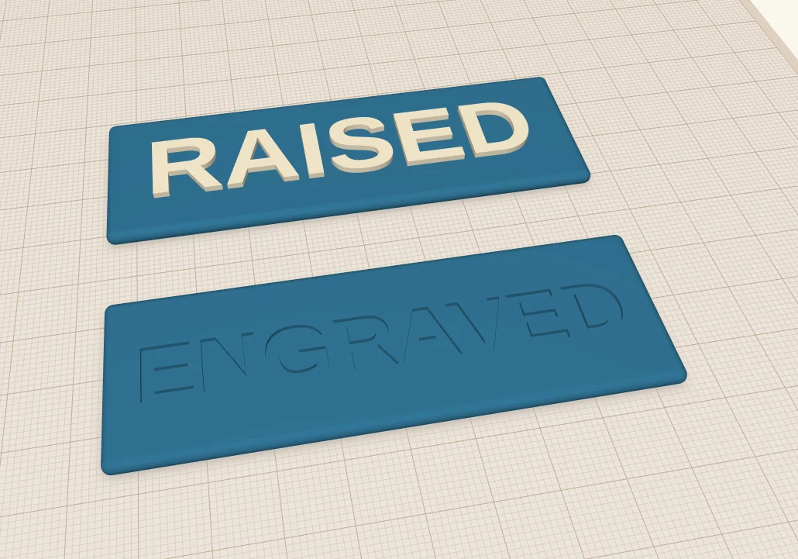
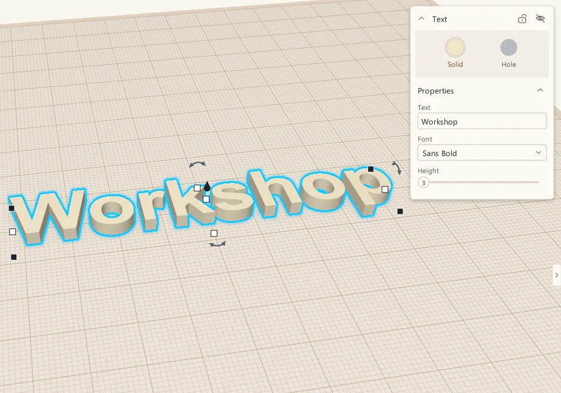
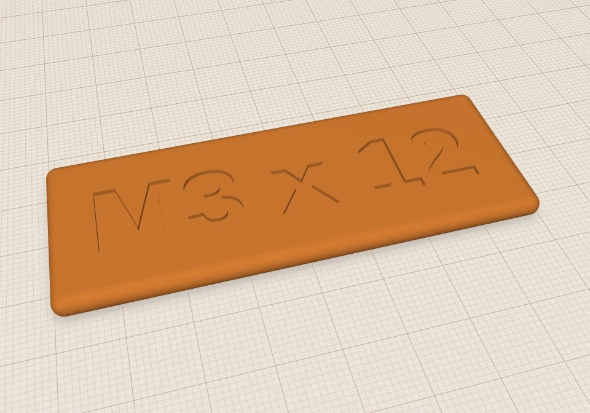
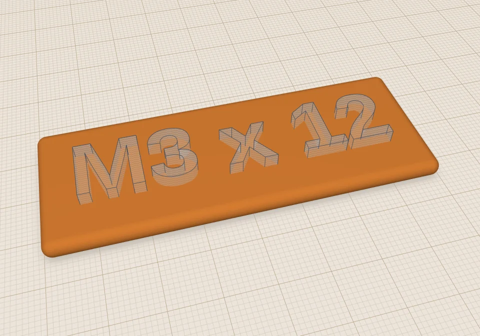
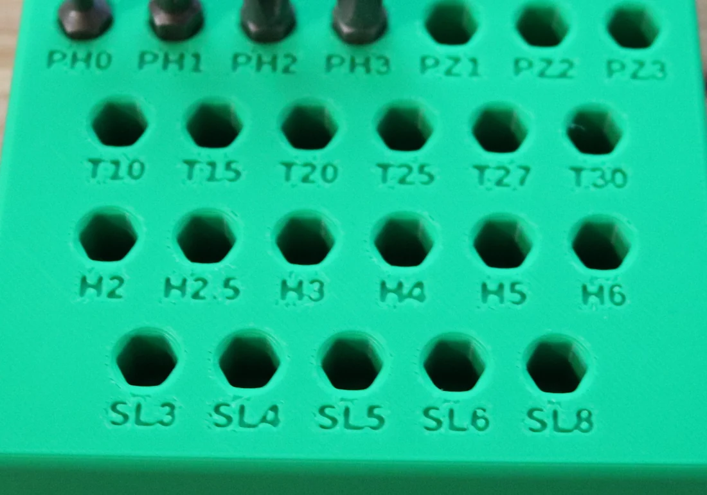
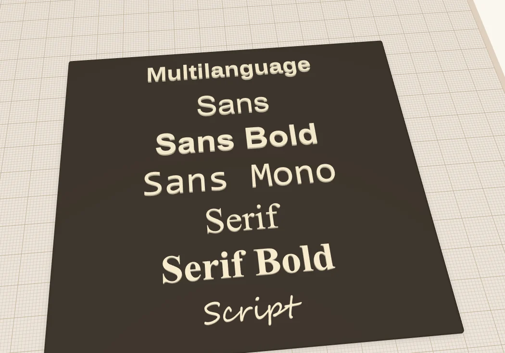
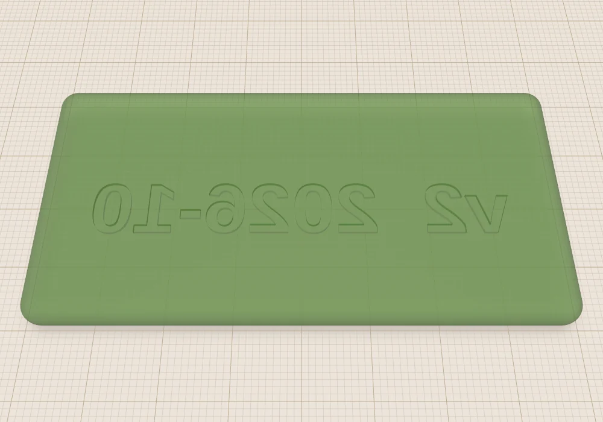
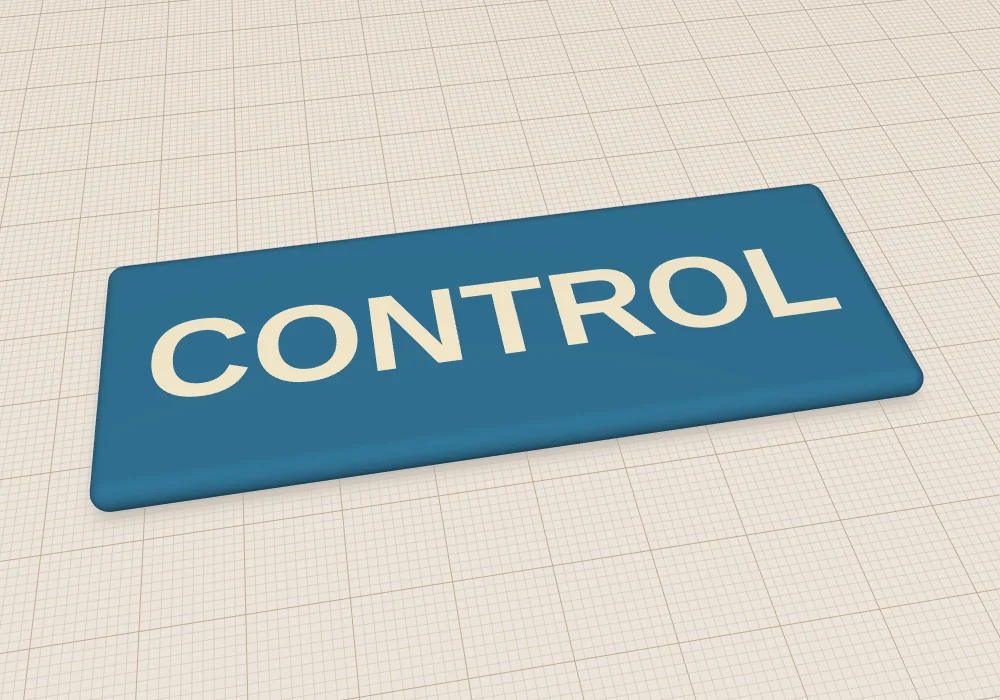
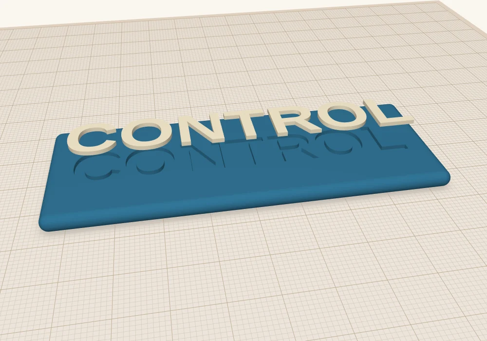
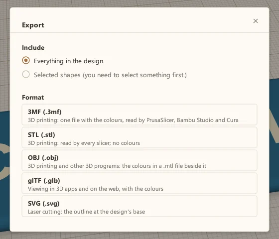

Putting text on your 3D prints
Sometimes you want to add labels, part numbers or a version indicator to a 3D print. This post shows how to do it, raised or engraved, helps you pick a font, and gives you some guidelines on font size.
 Scotti
Scotti
· 5 min read
I often need to add text to my prints. Sometimes it's lettering for a control panel. Other times it's just an identifier or a version number for a print so I can keep track of how it differs from similar prints. This is one of those things that feels like it should be easy, but often there are a few hidden gotchas. ScottiCAD tries to simplify the workflow, and I'll include some handy tips to keep you on track in this post.
There are two ways to do it. Raised text stands up off the surface. Engraved text is cut into it.

Adding text
Text is just another shape. Drag a Text shape onto the build plate from Basic Shapes (or search for "text"), then type your words in the panel on the right and pick a font.

The Height setting is how thick the letters are, how far they stand up from whatever they sit on, not how tall they are. To make the letters bigger or smaller, use the handles like any other shape, or type a size. You can change the words or the font later, too. If the text is already grouped into a part, ungroup it first (Ctrl+Shift+G), change it, and group it again.
Raised or engraved?
For raised text, sit the letters on top of the part, sink them in a little so they overlap it, and group the two together with Ctrl+G. For lettering that just needs to be read, I make it stand up 0.6 to 1 mm. That's three to five layers at 0.2 mm, which is plenty.
For engraved text, press H to make the text a hole, sink it into the part, and group. Here's a label for a bin of M3 screws before and after:


Before AfterWhich one should you use? Engraved text is my default for labels. Nothing sticks up to snag or break off, and it prints cleanly on a top surface. Raised text is easier to read from a distance. If you want the letters in a second colour, there's a third way, which I'll get to below.
How small can you go?
This is where most text goes wrong. Your printer lays down plastic in lines about as wide as the nozzle, 0.4 mm on most printers. A letter stroke thinner than about two of those lines doesn't print well. Make the text too small and the detail is lost: you get blobs instead of letters.
Here's a real print, the screwdriver bit holder from the examples. The labels are engraved 0.6 mm deep and they're 3.2 mm tall, in ScottiCAD's built-in font, which is a bold sans. They came out fine. I wouldn't go much smaller than that.

If you need the text smaller than that, use a bold font, keep it short, and try a finer nozzle or a smaller layer height.
Fonts
The font menu has seven names at the top.

Multilanguage is built into ScottiCAD, so a design that uses it looks the same on any computer. The other six use fonts that are already on your computer, a regular sans, serif and so on, and below them in the menu is every other font you have installed. That's handy, but if you send a design to a friend, they might not have the same fonts, and the text could come out looking different. For anything I share, I stick with Multilanguage.
For small text, use a bold font: Multilanguage, Sans Bold or Serif Bold. The thin parts of Serif and Script look great at large sizes and vanish at small ones.
Text on the bottom
The bottom of a part is a good place for a version number or a date. It's out of sight, and the first layer against the build plate comes out crisp.
The catch is that you're looking at it from the top while you design it, so you have to mirror it. Select the text, press M, and click the arrow that flips it left to right. From the top it reads backwards. Flip the printed part over and it reads correctly.

Engraving works better than raised text here. Raised letters on the bottom would be the only thing touching the build plate.
Text on a side wall works too, raised or engraved. For a slanted face, use the construction plane tool (W) to put a working plane on that face first, then add the text on it.
Two colours
Many people have multicolour printers these days. While there are techniques you can use for printing multiple colours on a single-material printer, such as pausing the print and swapping spools, I'm going to concentrate on the workflow that I use for multicolour prints.
I usually create the text as a separate object. I do not group it with the main object in the print. This allows a slicer to detect multiple objects and gives you the option to colour each of them separately.
If the text is inset into the surface (that is, if it is to appear flush), then I usually duplicate the text and use one copy to cut a matching hole in the primary object. The other copy fills the hole. This ensures the slicer will not try to print both objects in the same place.

Lift the letters up and you can see how it's built: a plate with the word cut into it, and a separate copy of the word that drops into the hole.

Give the plate and the letters different colours, then export with File → Export. Don't use STL for a multicolour print: STL has no colours, so the slicer can't tell them apart. OBJ and 3MF both keep them. ScottiCAD's 3MF puts each colour in its own part, and Bambu Studio and PrusaSlicer load those as separate parts you can assign a filament to.

Try it
The coasters, the bit holder and the cable clips in ScottiCAD's examples all use text. They're good ones to open up and poke at.
More from Scotti's Corner
- Your first ScottiCAD script 30 October 2026
- Three tools for people who actually print 30 October 2026
- Raspberry Pi mounts that line up the first time 25 October 2026
- How I build a project box 24 October 2026
- Why I wrote ScottiCAD 24 October 2026